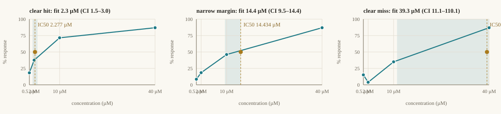

What a verdict is made of: raw wells, a fitted curve with its credible band, QC, and an explicit margin against the pre-registered gate.

3-parameter Hill (plateau profiled, not assumed — the classic right-censoring trap that the eval suite caught). Residual bootstrap, deterministic seed.
Z′ factor per plate; failed QC yields inconclusive, never a silent invalidate.
Two methods agreeing while both straddle the gate stays borderline. A preliminary hit that fails to reproduce is refuted — observed in the live suite.
Renderer dispatch by data kind: plate curves, microscope images, robot step logs, genomics tables — or an adapter's own registered renderer.
Hypotheses carry a mechanism, a refuted-if condition, and a citation that must resolve against PubMed. A fabricated reference ranks below no reference at all.